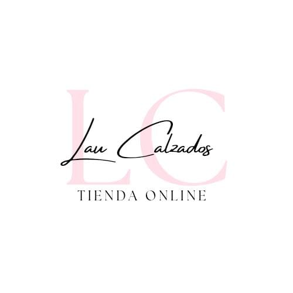
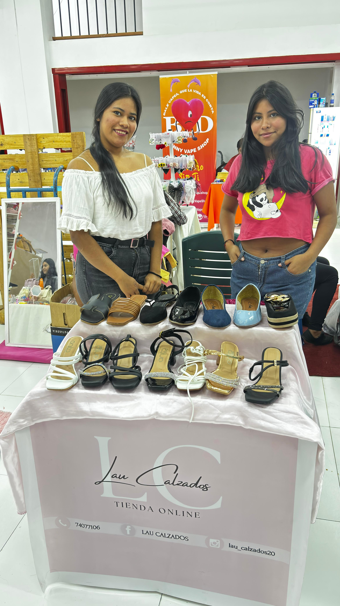

LAU CALZADOS



Lau Calzados nació de un sueño y una pasión: ofrecer a las mujeres calzado que no solo sea bonito, sino que también brinde comodidad y confianza en cada paso.
Fundada por Ana Laura, este emprendimiento surge al notar que muchas mujeres buscan diseños que puedan acompañarlas en su día a día sin sacrificar estilo.
Cada colección está pensada para mujeres auténticas, modernas y activas, que quieren sentirse seguras en cualquier ocasión: desde la oficina, una salida especial, hasta un evento importante.
Nuestros modelos, cuidadosamente seleccionados, combinan tendencias actuales con materiales de calidad, priorizando el confort para que disfrutes de caminar con libertad.
CATALOGO